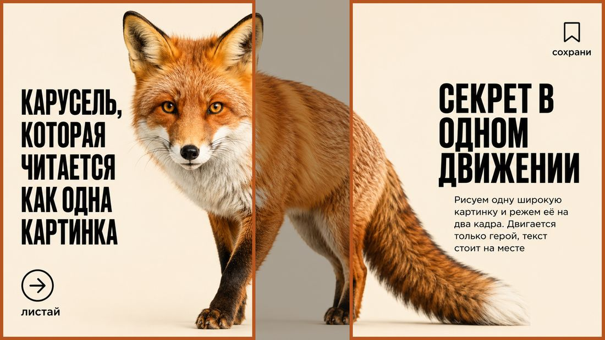
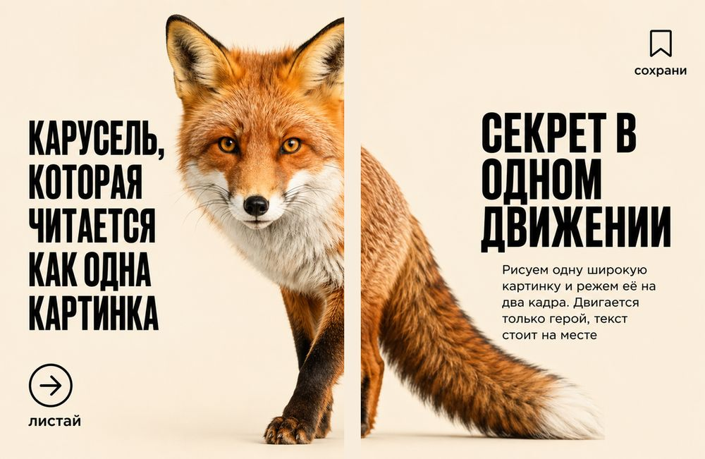
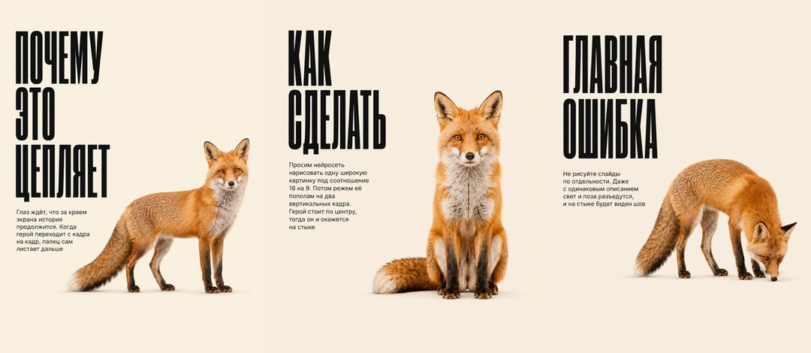

Собирается за 15 минут, без дизайнера и без съёмки
Вы наверняка видели такие карусели: листаете, а картинка не меняется на новую, а продолжается. Зверь переходит с кадра на кадр, хвост уходит на следующий слайд, и палец сам листает дальше
Внутри нет никакой магии и никакого дизайнера. Рисуется ОДНА широкая картинка, а потом режется на вертикальные кадры. Ниже весь приём по шагам, с промптами, которые можно скопировать

Нейросеть, которая рисует картинки с текстом. Подойдёт ChatGPT: он и рисует, и надписи по-русски держит прилично
Телефон, чтобы обрезать кадры. Ничего ставить не нужно, встроенного редактора фото хватит
Если захотите оживить героя, понадобится Google Flow, он входит в подписку Google AI. Это необязательный шаг, карусель работает и статичной
Решите, кто у вас герой и что он делает. Герой должен стоять ПО ЦЕНТРУ широкой картинки, потому что именно центр окажется на стыке двух кадров и создаст эффект продолжения
Текст размещаем по краям, слева и справа. Слева заголовок карусели, справа объяснение
Просим нейросеть нарисовать один горизонтальный кадр под соотношение 16 на 9. Не два кадра, а именно один. Вот промпт, замените текст и героя на свои
Если нейросеть напутала букву в слове, не переубеждайте её и не просите «исправить только это слово»: она чинит одно и ломает другое. Быстрее переписать фразу так, чтобы проблемного слова там не было. У меня она дважды написала «режъте» через твёрдый знак, пока я не заменила фразу целиком
Скачайте картинку на телефон. Откройте её в редакторе фото и обрежьте дважды
Между кадрами останется полоса, которая никуда не попадёт, и это нормально. Именно она даёт ощущение, что вы подглядываете за сценой через два окна

Положите кадры рядом и посмотрите на них как читатель. Герой должен угадываться на обоих: если на первом кадре он весь целиком, продолжения не будет и приём не сработает
Проверьте, что оба кадра одного размера. Разные пропорции внутри одной карусели площадка обрежет по своему усмотрению, и стык поедет
Оживлять нужно ВСЮ широкую картинку целиком, одним роликом, и только потом резать готовое видео на кадры. Два отдельных ролика дадут разное дыхание, и стык развалится
Загрузите широкую картинку в Google Flow первым кадром и дайте такой промпт
Обратите внимание на последнюю строку про движение. Не расписывайте зверю, что делать по частям тела: когда я перечисляла «дышит, шевелит ухом, моргает», лиса начала кивать головой, а лисы так не делают. Стоит отдать решение модели, и пластика становится настоящей
Первым ставим левый кадр, вторым правый. Дальше идут остальные слайды карусели, где вы раскрываете тему
Не обрезайте кадры при загрузке, они уже подогнаны

Самая частая. Даже с одинаковым описанием нейросеть даст другой свет, другой оттенок шерсти и другую позу. На стыке будет виден шов, и вся идея пропадёт
Если герой стоит слева, он целиком уедет на первый кадр, и продолжать на втором будет нечего
Один слайд 4 на 5, другой 3 на 4, и площадка обрежет их по-разному. Все кадры карусели делаем одного размера
Обычную карусель пролистывают на втором слайде. Бесшовную дочитывают, потому что глаз ждёт продолжения сцены, а не нового квадратика с текстом. Люди чаще досматривают до конца, а значит чаще доходят и до вашего предложения на последнем кадре
Приём не требует ни съёмки, ни дизайнера, ни платных программ. Всё, что нужно, вы только что прочитали
Бесшовная карусель это один инструмент. Дальше встаёт вопрос посложнее: где брать темы, как собрать поток контента и не тратить на него все вечера
Именно этому учит воркшоп Ивана Сергеева. Там показывают систему целиком, а не отдельный приём
Посмотреть программу